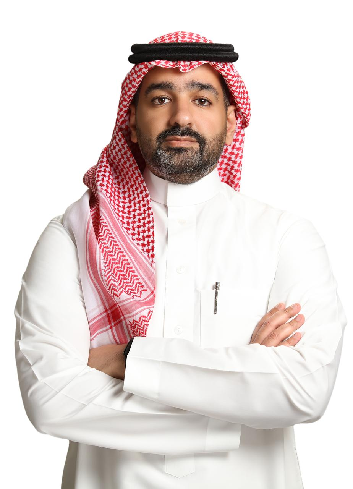

A strategic priority for national transformation. Sport sits at the heart of Vision 2030 — and football is its flagship.

A locally established Saudi C-level business transformation leader with over 20 years of experience building and scaling ventures in the sports, fitness and wellness sectors — spanning sports investment, football academy development and football infrastructure aligned with international standards. Majed brings deep regional knowledge and on-the-ground connectivity to every activation in the Kingdom.

Having worked in Saudi Arabia with MAHD Sports Academy and Al Ahli Saudi, and assigned as Sports Diplomacy Advisor to the Belgian Ambassador in KSA, he partners closely with Majed on every IFH activation in the Kingdom.
Annual contribution to GDP by 2030 (~1.5% of GDP)
Jobs expected in the sports sector over the next decade
Population physically active by 2030 — participation has more than tripled since 2018
World-class stadiums planned for the FIFA World Cup 2034
Sources: Saudi Ministry of Sport, Saudi General Authority for Statistics, Saudi Vision 2030.
Girls and boys in the Schools League
Coaches engaged in national scouting programs
Regional training centres across the Kingdom
Women's football academies established since 2021
Higher education graduates employed in sport-related fields (KACST, 2024)
Individuals trained through 5 international academies
Strategic academies launched under the Human Capability Development Program
“Sport has become a national strategic priority that contributes directly to the goals of Vision 2030 — it is a central force shaping the future of this nation and its people.”— HRH Prince Abdulaziz bin Turki Al-Faisal, Minister of Sport
Sports market value, 2025
Adults engaging in 150+ mins of physical activity per week — surpassing the 2027 target
Medals earned by Saudi athletes in international competitions in 2024
FIFA World Cup host
Sources: Saudi Ministry of Sport, Saudi General Authority for Statistics, Saudi Vision 2030.
“Sport has the transformative power to bring people together. These values — unity, diversity, and inclusion — are core to the broader transformation taking place in Saudi Arabia today.”— HRH Ambassador Reema Bandar Al-Saud
Vision 2030 has made Saudi Arabia a global sports destination — with football at the heart of its transformation.
Increase in women's participation in sport
Registered female athletes
Women's national teams
Women's sports centers
Female students competing in National School Leagues
Girls playing in schools' football leagues
Sources: Saudi Ministry of Sport, Saudi General Authority for Statistics, Saudi Vision 2030.
Vision 2030's Quality of Life Program uses sport, culture, entertainment and tourism to build a more active, liveable, and globally visible Kingdom — with two complementary strategic objectives at its core.
Build an active society through access, facilities, community sport, youth sport, women's sport, schools, and recreational football.
Build elite pathways: clubs, leagues, coaching, talent ID, competitions, international events, and high-performance systems — with football as the flagship.
Source: Saudi Vision 2030.
An integrated ecosystem combining football methodology, education and industry expertise to develop better players, coaches, football professionals and future citizens — supporting Vision 2030's Human Capability Development, workforce & job creation, youth empowerment and a sustainable football ecosystem.
Build a larger pool of highly qualified coaches, technical directors, academy specialists and performance staff.
Create a complete pathway from grassroots to elite performance with strong talent identification and long-term athlete development models.
Establish clear football philosophies, training methodologies, curriculums and player development frameworks.
Develop programs in leadership, lifestyle and character to build well-rounded people and future professionals.
Build the football business workforce of the future across operations, marketing, media, analytics, commercial, events and club management.
Ensure knowledge transfer, mentoring and co-creation to build sustainable local capability, not just short-term delivery.
Accelerate growth through coach education, academy structures, participation and talent pathways.
Invest in sports science, data, performance analysis, research and innovation to become a producer of football knowledge.
Saudi Arabia is massively investing in sport as part of Vision 2030. The need for quality coach education, human capital development and international knowledge exchange is structural and growing.
Strong demand for structured coaching pathways, training methodology and certification at all levels.
Clubs and federations are investing in youth development structures and seeking international partners for methodology and curriculum development.
Women's football and female coaching pathways are an explicit policy priority within Vision 2030 — a key opportunity for international federations and clubs partnering with IFH.
Growing demand for research, innovation and the localisation of international football expertise through sustainable partnerships.
Based on the Kingdom's national strategies, the Ministry of Sports has highlighted priority investment trends across the sports sector.
Source: Saudi Ministry of Sport, Ministry of Investment.
Let's explore how your organisation can benefit from joining our International Football Hub in Saudi Arabia.
Let Us Know